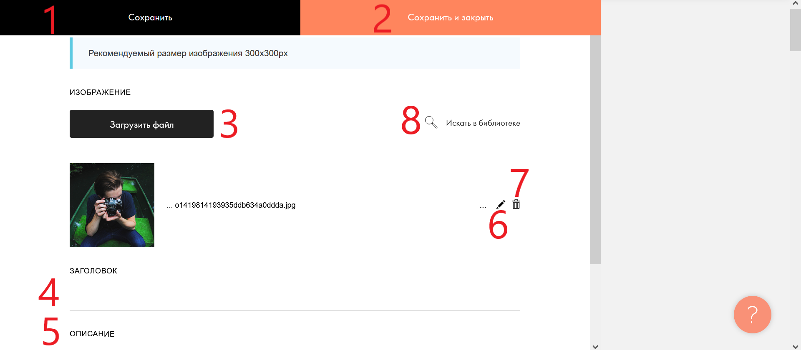

Контент блока

Если вы нажали "контент" в предыдущем окне, то у вас будет это окно. Чтоб изменить фотографию блока нажмите на кноаку "загрузить файл" для своих фотографий, или искать в библиотеке Ниже в поле "заголовок" вы можете написать текст,который будет являться заголовком(над фото). Ещё ниже поле "описание". Вы можете написать там текст,который будет являться описанием(под фото)Для дальнейших инструкций нажмите на стрелочку в правой области экрана)
Настройка блока(2)
Если вы нажали "настрйки" в предыдущем окне, то у вас будет это окно. В нём вы можете настроить позиционирование элементов в блоке, наличие анимаций и вид текста и изображений.(Для дальнейших инструкций прокрутите вверх, и нажмите на стрелочку в правой области экрана)